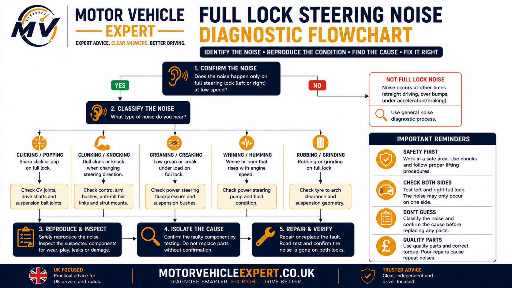

Why Does My Car Make Noise on Full Lock?
A noise at or near full steering lock happens because the steering, suspension, tyres and driveshafts are operating at one of their highest steering angles and, in some systems, one of their highest assistance loads.
The correct diagnosis starts with the type of noise. Repeated clicking suggests something very different from hydraulic whining, suspension creaking, a spring pop or tyre rubbing.
Repeated Clicking
Outer CV-joint wear moves high on the list when the vehicle is moving, especially under light throttle.
Groan or Whine
Hydraulic power-steering load, fluid condition, pump operation or steering-system resistance become more relevant.
Creak, Pop or Rub
Top mounts, strut bearings, springs, suspension joints, tyres and wheel-arch clearance deserve closer inspection.
First decide whether the noise depends on wheel rotation, steering effort or physical suspension movement . That single distinction separates many drivetrain faults from steering and suspension faults.
What Does “Full Lock” Actually Mean?
Full lock is the maximum steering angle available in one direction. At that point the road wheels, steering linkage and suspension are operating near the end of their designed steering travel.
On driven front wheels, the outer CV joints are also working through a large angle. On hydraulic power-steering systems, steering assistance demand can also be high as the steering reaches its limit.
Maximum Wheel Angle
The road wheel is close to its greatest designed steering angle.
High CV Articulation
A front outer CV joint works through a greater angle than it does while driving straight.
Steering Load Increases
Tyre resistance and assistance demand can increase during a stationary or very slow full-lock manoeuvre.
Clearance Is Reduced
Tyres, liners and suspension components may be closest to one another at large steering angles.
Do not repeatedly force the steering against its mechanical stop or apply unnecessary throttle while holding maximum lock. The aim is to reproduce an existing noise safely, not increase load on the steering, tyres or drivetrain.
Click, Groan, Whine, Creak, Pop or Rub?
“Noise on full lock” is not one fault. Each sound pattern points towards a different group of components and a different test procedure.
Click-Click-Click
Repeated rhythmic clicking while moving strongly suggests a rotating component, particularly an outer CV joint.
Low Groaning Sound
Hydraulic steering load, low fluid, pump operation, rack resistance or suspension articulation can create groaning.
High-Pitched Whine
Hydraulic power-steering pump load becomes important if the sound appears while stationary or at very low speed.
Rubber or Dry-Joint Creak
Top mounts, strut bearings, bushes and ball joints deserve priority when steering movement rather than wheel rotation produces the sound.
One Sharp Release
Spring wind-up, mount movement, steering-joint play or another component changing loaded position can create one impact.
Physical Contact
Tyre-to-liner, tyre-to-body, shield or other clearance problems should be checked before mechanical parts are replaced.
“Repeated click-click-click while moving on right full lock” gives a mechanic far more useful information than “something in the steering is noisy”.
Clicking When the Car Is on Full Lock
Repeated clicking during a tight moving turn is one of the strongest outer CV-joint patterns, especially when the frequency rises with wheel speed and light acceleration makes it clearer.
Repeated Rhythm
Clicks continue as the wheel rotates rather than happening once.
Worse Under Drive
Torque through the driveshaft loads internal CV-joint wear.
Large Steering Angle
Outer-joint articulation is greatest during tight turns.
Use Car Clicks When Turning at Low Speed for the dedicated CV-joint, driveshaft and rotating wheel-end diagnostic workflow.
Groaning Noise on Full Lock
A groan is mechanically different from CV clicking. It often follows steering effort rather than wheel rotation.
Hydraulic Steering Load
Pump and hydraulic-system noise can become more noticeable near the steering limit.
Steering Rack Resistance
Internal or mounting-related resistance can change steering sound and feel.
Suspension Articulation
Top mounts, bearings, bushes and ball joints can groan as the wheel reaches a large angle.
Continue into Car Groans When Turning for the dedicated hydraulic steering, rack, top-mount and suspension comparison.
Whining Noise at Full Steering Lock
A high-pitched whine on a hydraulically assisted steering system can result from increased pump load as the steering approaches its limit. The important distinction is between a brief change in operating noise and a persistent abnormal whine accompanied by another symptom.
Brief Change in Sound
Some hydraulic systems become audibly more loaded near maximum steering angle.
Constant Loud Whine
Fluid level, aeration, pump wear and hydraulic restriction deserve inspection.
Heavy Steering Too
Assistance performance should be investigated rather than treating the sound as normal.
EPS Vehicle
Electric power steering has no hydraulic pump, so the diagnostic path must move towards the motor, gears, rack and electrical assistance system.
Creaking When the Steering Reaches Full Lock
Creaking is often associated with friction or loaded articulation rather than a rotating drivetrain impact. The top-mount, strut bearing, suspension bushes, ball joints and steering joints all move as steering angle increases.
Stationary Creak
Top mounts, strut bearings and steering or suspension joints move higher on the list.
Creak + Bump
Suspension bushes, joints and mountings become stronger possibilities.
Creak + Spring Movement
Observe for a strut bearing that binds while the spring twists.
Compare with Car Creaks When Turning Steering Wheel for the wider stationary and moving steering-creak diagnosis.
Popping or Clunking Near Full Lock
One sharp pop or clunk often indicates a component changing position or releasing stored load rather than a noise that occurs continuously with rotation.
Spring Release
A binding strut bearing can make the spring twist and release.
Top-Mount Movement
Worn mount components can move as steering and suspension load change.
Steering-Joint Play
Clearance can be taken up once as steering load reverses.
Lower-Arm / Ball-Joint Movement
A heavily loaded suspension component can create one impact as wheel position changes.
Use Car Clunks When Turning at Low Speed for the dedicated load-change and steering-joint diagnosis.
Rubbing or Scraping Noise on Full Lock
A rubbing or scraping noise should trigger a clearance inspection before more expensive steering or drivetrain components are blamed.
Wheel-Arch Liner
Loose or displaced plastic can touch the tyre at large steering angles.
Oversized Tyre
Non-standard tyre dimensions can reduce clearance.
Wheel Offset
Different wheel fitment can move the tyre closer to suspension or body components.
Distorted Shield / Panel
Previous impact or repair can move a shield, liner or undertray into a rotating component.
Look for polished plastic, fresh scuff marks, rubber marks or damage around the tyre and wheel arch. If the tyre itself is being cut or damaged, do not continue repeated full-lock manoeuvres.
Full-Lock Noise While Stationary vs Moving
Whether the vehicle has to move before the noise appears is one of the strongest diagnostic clues.
Noise Without Wheel Rotation
Steering assistance, rack movement, top mounts, strut bearings, spring wind-up, ball joints and steering joints become stronger possibilities.
Noise Only While Rolling
CV joints, driveshafts, wheel bearings, tyre scrub, tyre contact and brake or rotating wheel-end components become more relevant.
A conventional outer CV-joint clicking pattern normally needs the driveshaft to rotate. If the exact same sound occurs stationary, inspect components that move with steering input instead.
Engine Running vs Engine Off: What Changes?
On vehicles where it is safe and diagnostically appropriate to make the comparison, assistance-system operation can help separate hydraulic or electric steering noise from mechanical suspension movement.
Noise Only With Assistance Active
Hydraulic pump, EPS motor or steering-assistance load deserves closer investigation.
Same Mechanical Creak
If the same creak or pop remains despite changes in assistance, top mounts, springs and joints stay high on the list.
Steering Much Heavier
Loss of assistance with the engine or system inactive is normal on many designs, so steering effort itself must not be mistaken for a fault.
Vehicle design differs. Engine-off comparisons are not appropriate in every situation, and some systems behave differently when electrical assistance is disabled. Use manufacturer-safe procedures where a workshop test is required.
Noise at the Steering Stop vs Just Before Full Lock
Establish whether the noise begins as the steering angle becomes large or only when the driver reaches the end of the available steering travel.
Begins Before Full Lock
CV-joint articulation, tyre clearance, top mounts and suspension movement can become progressively loaded as angle increases.
Only at the Stop
Steering-assistance load or mechanical stop behaviour deserves stronger comparison.
One Impact at the End
Separate normal stop engagement from abnormal mounting, joint or contact movement.
Noise on Left Full Lock vs Right Full Lock
Different noise between left and right turns can help localise the fault, but turn direction should not be used as a shortcut to declare which side has failed.
Left Only
Record the sound type and whether it requires vehicle movement or drivetrain load.
Right Only
Repeat the same speed and throttle condition for a valid comparison.
Both Directions
Check system-wide causes such as steering assistance, tyre scrub and common suspension movement as well as individual joints.
Full-Lock Noise in Forward vs Reverse
Reversing changes torque direction, brake loading and tyre forces. Comparing forward and reverse can therefore help separate a rotational joint from a one-off load-change movement.
Repeated Both Ways
A rotating joint or physical contact remains important if the sound continues rhythmically in both directions.
Reverse Only
Compare brake hardware, tyre movement, drivetrain backlash and suspension loading before assuming CV wear.
One Click After Reversal
Brake pads, splines, bushes or other parts changing loaded position become more likely than continuous CV clicking.
Light Throttle vs Coasting on Full Lock
Applying light throttle places torque through the driveshaft and CV joints. Coasting reduces that torque while leaving the steering angle broadly similar.
Louder Under Throttle
CV-joint and driveshaft faults become stronger when drivetrain torque increases the noise.
Same While Coasting
Steering, suspension, tyre and contact faults remain competitive if torque makes little difference.
Stops Off Throttle
A torque-sensitive drivetrain component deserves priority inspection.
There is no diagnostic benefit in applying aggressive acceleration with the steering against or near maximum lock.
One-Off Noise vs Repeated Wheel-Speed Rhythm
Noise timing is often more useful than loudness.
One Pop or Clunk
A component may move once into a new loaded position or release stored spring force.
Repeated Clicks
A repeating rotational pattern strongly increases suspicion of a CV joint or another rotating component.
Frequency Rises With Speed
If clicks become faster as the wheels rotate faster, rotation is central to the fault.
What Does the Steering Feel Like When the Noise Occurs?
A full-lock noise with completely normal steering feel is different from a noise accompanied by binding, heaviness, free play or steering vibration.
Normal & Smooth
A drivetrain or simple tyre-contact fault remains possible.
Heavy Steering
Steering assistance, rack resistance or mechanical binding needs investigation.
Notchy Steering
Top bearings, steering joints, rack mechanisms or assistance systems become more important.
Free Play
Track rods, steering joints, rack mountings and other safety-critical components require priority inspection.
Significant free play, binding, sudden assistance loss, abnormal wheel movement or unpredictable steering is not an ordinary full-lock noise complaint and needs prompt professional assessment.
Normal Tyre Scrub vs Actual Tyre Contact
At very low speed and large steering angles, the front tyres do not always roll through exactly the same path. Some scrub or tyre noise can therefore occur on high-grip surfaces.
That is different from the tyre physically contacting a liner, suspension component or body panel.
Surface Noise Without Contact Damage
The tyre may squeak, skip or scrub slightly against the road surface during a tight parking manoeuvre, particularly on dry high-grip surfaces.
Tyre Touching the Vehicle
Fresh scuff marks, rubbed plastic, damaged sidewalls or a noise at exactly the same steering angle each time indicate an actual clearance problem.
A tyre repeatedly contacting bodywork, suspension or damaged liners can suffer structural damage and should be inspected before the manoeuvre is repeated unnecessarily.
Diagnose Full-Lock Noise by Asking What Changes at Maximum Steering Angle
Full lock simultaneously changes several mechanical conditions. The diagnosis becomes much easier when those conditions are separated rather than assuming every noise has the same cause.
| Full-Lock Symptom | Mechanical Clue | Strong Starting Area |
|---|---|---|
| Repeated click-click-click while moving | Wheel rotation + high joint angle | Outer CV joint |
| Clicking becomes louder under light throttle | Drivetrain torque increases the symptom | CV joint / driveshaft |
| Whine only with steering assistance active | Assistance load is involved | Hydraulic PAS / EPS system |
| Groan while stationary | Wheel rotation not required | Steering assistance / rack / top mount |
| Creak throughout steering movement | Friction or loaded articulation | Top mount / strut bearing / joints / bushes |
| One spring-like pop near full lock | Stored torsional load releases | Strut bearing / spring seating |
| Rub at exactly the same steering angle | Physical clearance is reduced | Tyre / liner / wheel fitment |
| One clunk when steering direction reverses | Free play changes loaded direction | Steering joints / rack / suspension joints |
| Noise plus heavy or notchy steering | Steering operation itself is abnormal | Assistance system / rack / top mounts / joints |
Repeated rotational clicking points towards a different mechanism from steering-assistance whining, a stationary suspension creak or tyre contact. Prove which mechanical input is required before replacing parts.
What Causes Noise When a Car Reaches Full Lock?
Full steering lock places several systems close to their maximum operating angles or loads at the same time. The steering rack is near the end of its travel, the front suspension is highly articulated, driven wheels place the outer CV joints at a large angle and the tyre may be close to wheel-arch or suspension components.
The most likely fault therefore depends on the type of noise and the mechanical condition needed to create it. Repeated clicking while moving under drive points in a different direction from a stationary hydraulic whine, spring pop or tyre rub.
Repeated Clicking
Outer CV-joint wear is one of the strongest causes when the clicking repeats with wheel rotation on a tight powered turn.
Groaning or Whining
Hydraulic power steering, EPS operation, steering-rack load or another steering-system fault becomes more relevant.
Creak, Pop or Rub
Top mounts, strut bearings, springs, suspension joints, tyre scrub and physical clearance should be investigated.
First identify whether the sound is rotational, hydraulic, electrical, friction-related, impact-related or physical contact. That classification determines which system should be tested first.
What Happens Mechanically as the Steering Reaches Full Lock?
Steering effort travels through a chain of components before the road wheels change direction. At large steering angles each component can be operating under greater load or articulation than it does during ordinary straight-line driving.
1. Steering Wheel
Driver input begins at the steering wheel and upper steering column.
2. Column & Intermediate Shaft
Universal joints and sliding sections transmit steering input to the steering gear.
3. Steering Rack
Rack movement converts steering-wheel rotation into lateral movement.
4. Track Rods
Inner and outer steering joints transmit rack movement to the steering knuckles.
5. Knuckle & Hub
The complete wheel-end assembly turns around the steering axis.
6. Strut / Ball Joints
Suspension joints articulate while continuing to control wheel position.
7. CV Joint
On driven steering wheels, the outer CV joint transmits torque through a large steering angle.
8. Tyre Contact Patch
The tyre reacts against the road and can generate substantial steering resistance at parking speed.
Steering Column and Intermediate-Shaft Noise
Steering columns can include universal joints, sliding sections, bearings and intermediate shafts between the steering wheel and the rack.
Wear, dry joints, excessive clearance or movement at these interfaces can produce clicking, knocking or creaking as steering force changes.
Cabin Noise
Noise heard around the pedals, lower dashboard or steering wheel makes the column area more relevant.
Direction-Reversal Click
Clearance can produce one impact when steering load changes from one direction to the other.
Dry-Joint Creak
A stiff universal or sliding joint can produce friction noise through part of the steering movement.
The dedicated Steering Wheel Creaks When Turning guide focuses on steering-column, intermediate-shaft and cabin-localised steering noises.
Steering-Rack and Rack-Mounting Noise
The steering rack approaches the end of its normal travel as full lock is reached. Excessive internal clearance, abnormal resistance or movement of the rack housing at its mountings can create clunks, knocks or changes in steering feel.
Internal Wear
Excessive clearance can create impact or free play as steering direction changes.
Rack Mountings
The steering gear should remain correctly located while steering load is applied.
Abnormal Resistance
Binding or rough operation can create heavy or inconsistent steering as well as noise.
Inner track rods, rack mountings, column joints, top mounts and subframe movement can transmit noise into the steering gear. Confirm where the abnormal movement originates first.
Power-Steering Noise on Full Lock
Assistance-system diagnosis depends on whether the car uses hydraulic, electro-hydraulic or fully electric power steering. The systems operate differently and should not be diagnosed using the same fault list.
Pump & Fluid System
A belt-driven or electrically driven hydraulic pump supplies pressurised fluid to assist steering.
Electric Pump + Hydraulic Rack
Hydraulic fluid still provides assistance, but the pump is driven electrically rather than directly by the engine.
Electric Motor Assistance
Electric power steering uses a motor and control system rather than hydraulic pressure.
Hydraulic Power-Steering Pump, Fluid and Hose Faults
Hydraulic steering can become audibly more loaded near full lock. Excessive or unusual noise, however, can indicate low fluid, aeration, pump wear, belt problems, hose restriction, fluid leakage or mechanical resistance elsewhere in the steering.
Low Fluid
Insufficient fluid can introduce noise and reduce consistent hydraulic assistance.
Aerated Fluid
Air in the hydraulic circuit can produce foaming, whining or inconsistent assistance.
Pump Wear
Internal wear can produce persistent whining or groaning under steering load.
Hose / Pipe Problem
Leakage, restriction or damaged hydraulic lines can affect system pressure and noise.
Maximum steering position can create very high system demand. Holding the wheel hard against the stop unnecessarily increases hydraulic load and heat.
EPS Motor and Gear-Reduction Noise
Electric power steering can use a motor on the column, pinion or rack. High assistance demand during parking can make normal electric-motor or reduction-gear operation more noticeable.
Loud knocking, grinding, jerky assistance, unexpected heaviness or a steering warning message is different from a faint operating sound and should be diagnosed properly.
Motor Noise
A faint electric assistance sound can become more noticeable at parking speeds.
Reduction Gear
Wear or abnormal gear movement can create knocking or rough assistance on some designs.
Electronic Fault
Assistance faults may be accompanied by warning messages, stored fault codes or inconsistent steering effort.
Do not apply hydraulic power-steering diagnoses to a fully electric system. Identify which assistance design the vehicle actually uses before checking fluid or pumps.
Inner and Outer Track Rods
The track rods transfer steering-rack movement to the steering knuckles. At full lock the joints are working through substantial articulation while also carrying steering load.
Outer Track-Rod End
Excessive joint play can produce one click or knock as load changes.
Inner Track Rod
Wear near the rack can imitate internal rack noise or steering looseness.
Joint Binding
A rough or contaminated steering joint can creak or resist movement through part of the steering range.
One click as load changes direction is mechanically different from repeated click-click-click throughout a moving full-lock turn.
Steering Knuckle and Hub Movement
The steering knuckle connects the hub, steering linkage and suspension joints. It must turn smoothly while maintaining accurate wheel location.
Joint Interfaces
Ball joints, track rods and strut attachments all load the knuckle during steering.
Hub Connection
The wheel bearing and driveshaft interface are located within the same wheel-end region.
Previous Damage
Distortion after kerb, pothole or accident impact can affect clearance and geometry.
Top Mounts and Strut Bearings
On many MacPherson-strut front suspensions, the complete strut and spring assembly must rotate as the steering moves. The top bearing allows that movement while the top mount carries suspension load.
Wear or binding can become especially noticeable near full lock, where the spring and strut have moved through a large steering angle.
Stationary Creak
A noise that occurs while parked keeps top-mount movement high on the diagnostic list.
Spring Twang
Bearing binding can make the spring wind up before releasing.
Upper-Strut Knock
Mount deterioration can allow abnormal movement around the strut tower.
Bump Noise
The same mount may also creak or knock during suspension travel.
Continue into Bad Top Mount Symptoms for the dedicated strut-mount and bearing diagnosis.
Coil-Spring Wind-Up and Sudden Release
If a strut bearing does not rotate freely, the coil spring can twist as steering angle increases. The spring then stores torsional force until it suddenly moves or releases.
Spring Twists
Steering input is partially stored as torsional spring movement.
Resistance Builds
Bearing friction prevents smooth rotation.
Pop / Twang
The spring suddenly slips into a new position and creates a sharp release noise.
Use Car Pops When Turning for the dedicated spring-release, joint and top-bearing comparison.
Ball Joints and Lower-Arm Bushes
Full-lock steering changes the position and loading of the lower suspension joints. A worn ball joint or excessively deteriorated arm bush can therefore produce clicking, creaking or clunking as the wheel reaches a large steering angle.
Articulation & Free Play
A ball joint must articulate while maintaining wheel location. Wear can create movement or impact as load changes.
Controlled Compliance
Excessive deterioration can allow the lower arm to move further than intended as tyre, steering and braking loads change.
Do not dismiss excessive joint movement because the original complaint occurs only while parking. These components contribute directly to steering and wheel control.
Anti-Roll-Bar Bushes and Drop Links
Anti-roll-bar components are not usually the first suspect for a flat-surface steering-only full-lock noise. They become more relevant when the manoeuvre also includes body roll or unequal suspension movement.
Drop Links
Worn joints can click or knock when one wheel moves differently from the other.
ARB Bushes
Deteriorated mounting bushes can creak or knock as the bar twists in its mountings.
Steering plus one-wheel suspension movement adds anti-roll-bar load and makes suspension-joint diagnosis more useful.
Outer CV Joint — the Main Cause of Repeated Full-Lock Clicking
On a driven steering wheel, the outer constant-velocity joint must transmit torque while the wheel is turned. Full lock places the joint at a large working angle.
Internal wear can allow the joint's working components to move repeatedly through worn tracks under torque, creating the familiar click-click-click pattern as the driveshaft rotates.
Vehicle Moving
Classic CV clicking normally requires driveshaft rotation.
Tight Steering
Larger joint angle exposes wear more clearly.
Light Throttle
Applied torque makes internal clearance more audible.
Rhythmic Clicking
Frequency normally rises as wheel speed increases.
Moving vehicle + large steering angle + light drive + repeated wheel-speed-related clicking places the outer CV joint high on the diagnostic list.
Continue into Car Clicks When Turning at Low Speed for outer-CV, boot and driveshaft diagnosis in more detail.
Inner CV Joint and Driveshaft Faults
Inner CV-joint faults commonly produce a different pattern from the classic outer-joint full-lock click. They are more often associated with vibration, shudder or load-change movement under acceleration.
Inner CV Wear
Straight-line acceleration vibration can be more characteristic than tight-turn clicking.
Driveshaft Damage
Distortion or poor previous repair can produce rotational vibration or unusual wheel-end behaviour.
Spline / Hub Movement
Clearance can produce a single click or clunk during torque reversal rather than continuous full-lock clicking.
Wheel-Bearing Noise vs Full-Lock Noise
Wheel bearings more commonly produce humming, rumbling or droning that changes with vehicle speed and cornering load rather than repeated clicking on full lock.
Road-Speed Hum
Noise normally becomes more noticeable as speed increases.
Cornering Load
Noise can change as the bearing is loaded differently through a bend.
Hub Movement
Excessive wheel-end play requires prompt professional investigation.
Tyre Scrub, Tyre Contact and Wheel Fitment
Full lock creates the smallest clearance between the tyre and several nearby components. Incorrect tyre size, wheel offset, suspension height or displaced bodywork can therefore produce rubbing that is absent during ordinary driving.
Normal Surface Scrub
Tyres can scrub slightly against a high-grip road surface during very tight parking manoeuvres.
Oversized Tyres
Larger width or overall diameter can reduce available clearance.
Incorrect Wheel Offset
The tyre may sit too far inward or outward relative to the suspension and body.
Lowered Suspension
Modified ride height can change tyre-to-body clearance during steering and suspension compression.
Loose Arch Liner
Missing clips can allow plastic trim to contact the tyre.
Accident Damage
Distorted bodywork, suspension or mounting points can reduce clearance on one steering direction.
Tyre Damage
Repeated contact can mark or damage the sidewall and must not be dismissed as normal scrub.
One Side Only
Unequal clearance left-to-right can provide a useful fitment or damage clue.
A tyre squeaking against the road on a very tight dry turn can be normal. A sidewall touching suspension, bodywork or damaged trim is a physical clearance fault and should be corrected.
Brake Shield and Brake-Hardware Noise
A noise that appears during a tight turn may come from the brake assembly or surrounding wheel-end hardware rather than from the steering system itself.
Disc Shield
A bent backing shield can contact the rotating disc or another wheel-end component.
Pad Movement
Pads can click as brake-force direction changes during manoeuvring.
Caliper Hardware
Worn guides or incorrect hardware can allow abnormal movement.
Stone / Debris
Debris near the disc shield can create a rotational scraping or ticking sound.
Loose Steering or Suspension Fixings
A full-lock clunk appearing immediately after steering, suspension, driveshaft or brake work should trigger an inspection of the recently disturbed area before unrelated parts are replaced.
Strut Fixings
Incorrect security can allow movement as the strut turns.
Steering-Rack Fixings
Rack movement under steering load can create a substantial clunk.
Track-Rod / Joint Fixings
Steering-joint security must be confirmed after related repairs.
Wheel / Hub Hardware
Wheel and driveshaft security are safety-critical.
Do not continue road testing simply to reproduce a noise if a wheel, brake, steering or suspension fixing may be loose.
Other Faults That Can Sound Like Full-Lock Steering Problems
Undertray
Loose panels can touch the tyre at large steering angles.
Mud Flap
Displaced trim can scrape during one steering direction.
Wheel Trim
Loose trims can click or flex as the wheel rotates.
Exhaust Contact
Engine movement during manoeuvring can allow a loose exhaust to contact the body.
Heat Shield
Loose shielding can click or rattle as body or drivetrain load changes.
Engine / Gearbox Mount
A mount can clunk when drive takes up during parking and be mistaken for a steering fault.
Body Creak
Body twist during driveway manoeuvres can create trim, seal or hinge noises.
Recent Repair
A symptom starting immediately after mechanical work should send the inspection back to the disturbed components first.
Full-Lock Noise-to-Fault Comparison
| Noise / Pattern | Strong Causes | Supporting Clue | Best Confirmation |
|---|---|---|---|
| Repeated click-click-click while moving | Outer CV joint | Louder under light throttle and follows wheel speed | Controlled moving turn + joint/boot inspection |
| Hydraulic whine at steering limit | PAS pump / fluid / hydraulic load | Occurs with assistance active | Fluid, pump and hydraulic-system checks |
| Groan while stationary | Hydraulic steering, rack, top mount or suspension joint | Wheel rotation not required | Stationary localisation and steering inspection |
| Electric motor / gear noise | EPS system | No hydraulic system fitted | EPS operation and fault-code diagnosis |
| Creak through steering sweep | Top mount, strut bearing, ball joint, bush or steering joint | Often reproducible stationary | Loaded steering/suspension observation |
| One spring-like pop | Binding strut bearing / spring wind-up | Spring twists before release | Observe spring during steering |
| One clunk on steering reversal | Track rod, rack mounting, ball joint or suspension movement | Load reverses before impact | Controlled left-right steering load test |
| Scrape at same large steering angle | Tyre / liner / wheel fitment | Visible contact marks | Full clearance inspection |
| Tyre squeak / scrub on dry surface | Tyre slip at high steering angle | No physical vehicle contact | Inspect tyre and body clearance |
| Hum or drone through normal road speeds | Wheel bearing | Changes with speed / cornering load | Bearing and hub inspection |
| Click on first brake after reversing | Brake hardware | Follows brake-load reversal | Pad / caliper / carrier inspection |
| Clunk as drive takes up during parking | Powertrain mount / drivetrain backlash | Steering angle itself does not trigger it | Controlled torque-reversal test |
Match the Full-Lock Noise With the Second Symptom
Click + Light Throttle
Outer CV-joint wear moves strongly to the top of the list.
Whine + Low Fluid
Hydraulic power-steering leakage or fluid loss requires investigation.
Groan + Heavy Steering
Steering assistance, rack resistance or mechanical binding becomes more concerning.
Pop + Spring Twang
Top mount and strut-bearing binding become strong suspects.
Rub + Sidewall Marks
Physical tyre clearance is the priority, not a CV-joint diagnosis.
Clunk + Steering Free Play
Track rods, ball joints, rack and steering mountings need priority inspection.
Noise + Bump Movement
Top mounts, ball joints, lower-arm bushes and anti-roll-bar components become more relevant.
Click + Straight-Line Vibration
Widen the investigation to the inner CV joint and complete driveshaft.
Noise + Recent Repair
Check every disturbed fixing and component before authorising additional parts.
“Noise on full lock” is broad. “Repeated clicking on full lock under light acceleration” or “stationary groaning with heavy steering” gives a much stronger mechanical direction.
How a Mechanic Diagnoses a Noise on Full Lock
A professional diagnosis should reproduce the complaint under controlled conditions before parts are replaced. “Noise on full lock” is only the starting description. The useful evidence is whether the sound occurs while stationary or moving, whether it follows wheel rotation, whether steering assistance is under load, whether drive torque changes it and whether the noise occurs before the steering reaches its physical stop.
The aim is to identify the system producing the noise first — drivetrain, steering assistance, steering linkage, suspension, tyre clearance, brakes or another wheel-end component — and only then isolate the individual fault.
Confirm the Complaint
Establish the exact sound, steering direction, vehicle speed and operating condition reported by the driver.
Reproduce It Safely
Compare stationary steering with controlled low-speed manoeuvres without repeatedly forcing the steering against its stop.
Classify the Noise
Decide whether it is clicking, groaning, whining, creaking, popping, clunking, scraping or tyre scrub.
Identify the System
Use the operating pattern to separate drivetrain, steering, suspension, tyre-clearance and brake or hub faults.
Inspect Under Load
Observe components while steering load is applied rather than relying only on an unloaded visual inspection.
Confirm the Fault
Check the suspected component for wear, binding, leakage, insecurity, damage or abnormal clearance.
Repair the Cause
Replace or repair only the component supported by the diagnostic evidence.
Verify the Repair
Repeat the original manoeuvre and confirm the noise and any related steering symptom have been corrected.
If the original noise cannot be reproduced or confidently localised, replacing the most commonly blamed component is still guesswork. A CV joint, top mount, steering rack and power-steering pump can all produce different noises during tight manoeuvring.
Ask Exactly When the Full-Lock Noise Happens
A short driver interview can eliminate several incorrect diagnostic paths before the vehicle is even lifted. The mechanic should establish precisely what has to happen for the noise to appear.
Left or Right Lock?
A fault occurring in only one steering direction can help isolate CV-joint loading, tyre clearance or suspension movement.
Stationary or Moving?
This is one of the strongest early separators between steering or suspension faults and rotating drivetrain faults.
Forward or Reverse?
Direction changes drivetrain torque, brake-hardware position and the way suspension components are loaded.
Throttle or Coast?
Clicking that becomes clearer when drive torque is applied strongly supports a driveshaft or CV-joint investigation.
Before or At Full Lock?
A noise occurring throughout the steering sweep differs from one appearing only when maximum steering load is reached.
Cold or Hot?
Temperature can affect hydraulic fluid behaviour, rubber bushes, lubrication and the repeatability of some noises.
“Repeated clicking from the front during right-hand full-lock turns while moving forward under light throttle” is diagnostically much stronger than simply recording “steering noise”.
Does the Noise Happen While the Car Is Stationary?
A controlled stationary steering test is one of the most useful early checks because the road wheels are not rotating. If the original noise remains, faults that depend on driveshaft or wheel rotation become less likely.
Noise Still Present
Investigate steering assistance, top mounts, strut bearings, springs, steering joints, rack operation and suspension binding.
Noise Disappears
Rotating components such as the outer CV joint, wheel-end hardware and tyre interaction become more relevant.
Steering Becomes Heavy
Assistance faults or mechanical binding deserve priority, particularly if steering effort changes suddenly.
The purpose is to reproduce the complaint, not to maintain maximum system load. On hydraulic systems, unnecessarily holding full lock can increase pump pressure, fluid temperature and steering-system noise.
Controlled Low-Speed Circle Test
Where it is safe to do so, slow circles in an open area allow the mechanic to compare left and right steering lock while the wheels, driveshafts and suspension are operating dynamically.
Left Circle
Listen for the exact noise and note whether it repeats with wheel rotation.
Right Circle
Compare the opposite steering direction under similar speed and throttle.
Light Throttle
A worn outer CV joint often becomes more obvious when drivetrain torque is applied.
Coasting
Compare the same turn with minimal drive torque to determine whether the sound changes.
Heavy clunking, abnormal wheel movement, severe grinding, steering binding or suspected loose steering, suspension, brake or wheel hardware should end the road test immediately.
Does the Noise Start Before Full Lock or Only at the Steering Stop?
The exact steering angle at which the noise begins can separate a component that is moving or binding through the steering sweep from a system reacting only to maximum steering angle or assistance load.
Noise Builds Through the Sweep
Top mounts, springs, steering joints, suspension articulation and tyre clearance become stronger possibilities.
Noise Appears at Large Angle
CV-joint articulation, tyre clearance and components reaching their greatest operating angle deserve attention.
Noise Only at Maximum Load
Hydraulic steering load or normal system-load changes may be involved, but unusually loud or harsh noises still require investigation.
Compare Left Full Lock With Right Full Lock
A one-direction-only symptom is valuable evidence. Steering angle, driveshaft articulation, suspension loading and tyre clearance all change from one direction to the other.
Both Directions
Consider systems common to both directions, including steering assistance, rack operation and symmetrical tyre scrub.
One Direction Only
Local wheel-end, CV-joint, suspension or clearance faults become more useful diagnostic targets.
Different Noise Each Way
Do not assume there is only one fault. Separate problems can exist on opposite sides of an older vehicle.
Compare Full-Lock Noise in Forward and Reverse
Changing direction reverses drivetrain torque and can move brake pads, suspension bushes and drivetrain components into a different loaded position.
Forward and Reverse
A steering-angle or articulation-related fault remains high on the diagnostic list.
Only Under Drive
CV joints, driveshafts and drivetrain mounts deserve greater attention.
Single Click After Reversal
Brake-pad movement, joint free play or another component taking up clearance may create one impact rather than repeated clicking.
Does Light Throttle Make the Noise Worse?
Torque sensitivity is particularly useful when separating a worn driveshaft joint from steering or suspension noises.
Drivetrain Load Matters
Repeated clicking that strengthens under light acceleration during a tight turn is a strong outer CV-joint pattern.
Look Beyond the Driveshaft
Steering assistance, top mounts, suspension joints, tyre contact and other wheel-end causes remain important.
The CV boot, joint condition, driveshaft and surrounding components should still be inspected before a replacement is authorised.
Does the Noise Repeat With Wheel Rotation?
Frequency is one of the strongest clues available. A repeating noise suggests a rotating or cyclic mechanism, while one pop or clunk usually indicates movement between loaded positions.
Repeated Click
Strongly consider an outer CV joint when it occurs during a moving tight turn.
Continuous Groan
Steering assistance, binding or friction-related causes become more likely.
Single Pop
Spring wind-up, top-mount movement or joint movement may be releasing stored load.
Single Clunk
Free play, mounting movement or torque reversal requires investigation.
Diagnose Hydraulic Power Steering and EPS Separately
Before diagnosing a whine or groan, identify which steering-assistance system the vehicle actually uses. Hydraulic and electric power steering require different checks.
Fluid, Pump, Hoses and Rack
Check the correct fluid level and condition, visible leakage, aeration, pump noise, belt drive where applicable and hydraulic assistance behaviour.
Motor, Sensors and Control System
Check warning messages, assistance consistency, relevant fault codes, electrical supply and whether the noise is coming from the EPS motor, column or steering gear.
Electric power steering may have no hydraulic fluid reservoir or hydraulic pump. Confirm the system fitted before following a hydraulic diagnostic procedure.
Check Top Mounts, Strut Bearings and Spring Wind-Up
On a strut suspension system, the strut assembly must rotate as the steering turns. A binding upper bearing can resist this movement, causing the coil spring to twist before releasing suddenly.
Observe the Spring
Look for twisting followed by a sudden release as an assistant turns the steering slowly.
Feel for Roughness
Binding or notchy movement through the steering sweep can support a mount or bearing investigation.
Listen at the Turret
Localising a creak or pop near the upper strut mounting is stronger evidence than hearing it only from inside the cabin.
A coil spring visibly winding up and then jumping as steering input continues is very different from the rhythmic click of a rotating outer CV joint.
Inspect the Steering Rack, Track Rods and Steering Joints
Steering linkage faults require particular care because excessive play, binding or insecurity can affect directional control rather than merely producing an annoying noise.
Inner Track Rod
Check for abnormal free play and movement under steering load.
Track-Rod End
Inspect the joint, boot, security and movement at the steering knuckle.
Rack Mountings
The rack should not shift abnormally in its mountings when steering load changes direction.
Column Joints
Intermediate-shaft and universal-joint movement can produce clicking, stiffness or roughness.
If excessive movement, damaged steering joints, rack insecurity or significant binding is confirmed, the vehicle requires repair before normal driving continues.
Check Ball Joints, Lower Arms and Suspension Bushes
Suspension joints must control wheel position while also allowing the movement required by steering and suspension travel. Wear or binding can create a creak, click or clunk when steering load changes.
Ball-Joint Play
Check using the correct loaded or unloaded procedure for the suspension design.
Bush Movement
Look for excessive arm movement, deterioration, separation or contact under load.
Loaded Observation
A component that looks acceptable hanging freely may behave differently at normal ride height.
How to Confirm an Outer CV-Joint Diagnosis
Repeated clicking on a moving full-lock turn is strongly associated with outer CV-joint wear, but the joint should still be confirmed rather than replaced solely because the symptom sounds familiar.
Inspect the CV Boot
Splits, loose clips and grease thrown around the wheel arch support contamination or lubricant-loss concerns.
Compare Both Locks
Establish whether the clicking is stronger in one steering direction.
Apply Light Drive
Confirm whether torque makes the rhythmic clicking more pronounced.
Inspect the Driveshaft
Check the complete shaft and both joints rather than concentrating only on the outer boot.
Outer CV joints are strongly associated with repeated clicking during tight driven turns. Inner joints are more commonly investigated when vibration or shudder occurs under acceleration, although complete driveshaft condition should always be considered.
Inspect Tyre and Wheel-Arch Clearance at Full Steering Angle
Physical rubbing can often be confirmed visually. The tyre, wheel, suspension and body should be checked through the steering range and, where appropriate, with the suspension at normal loaded ride height.
Tyre Sidewall
Look for fresh polishing, cuts, abrasion or repeated contact marks.
Arch Liner
Check loose clips, displaced plastic and obvious rubbed areas.
Wheel Fitment
Confirm tyre dimensions and wheel specification are appropriate for the vehicle.
Suspension Height
Lowering, broken springs or previous damage can alter available clearance.
Repeated rubbing against bodywork or suspension can damage the tyre. Do not classify visible sidewall contact as harmless full-lock tyre scrub.
Rule Out Brake, Hub and Wheel-End Noise
Not every noise heard near a front wheel during a tight turn is caused by steering or the driveshaft. Brake and hub components can create convincing mimics.
Disc Shield
Check for contact marks, distortion and trapped debris.
Brake Hardware
Inspect pads, clips, guides and caliper security where a click follows load reversal.
Wheel Bearing
Look for abnormal hub play and road-speed-related humming rather than diagnosing from full-lock position alone.
Wheel Security
Wheel and hub security must be confirmed immediately if abnormal movement is suspected.
Safe Inspection When the Vehicle Must Be Raised
Some checks require access beneath the vehicle or unloaded suspension, but steering and suspension diagnosis can also require the vehicle to be at normal ride height. The inspection method should match the component being tested.
Correct Lifting Points
Lift only at manufacturer-approved points and use equipment suitable for the vehicle.
Support the Vehicle
Never work beneath a vehicle supported only by a jack.
Know the Suspension Design
Joint play and bush movement can change when suspension load is removed.
If the required steering, suspension or driveshaft inspection cannot be carried out safely with appropriate lifting and support equipment, leave the under-vehicle checks to a competent workshop.
Car Makes Noise on Full Lock Diagnostic Process
This diagnostic flow separates stationary steering noise from wheel-rotation, drivetrain-load and physical-clearance symptoms before narrowing the investigation to individual components.

Common Full-Lock Noise Diagnostic Mistakes
Full-lock noises are frequently misdiagnosed because several components are being loaded at the same time. Replacing parts by symptom association alone can become expensive very quickly.
“Click Means CV Joint”
Repeated rotational clicking is important, but a single click can come from steering, suspension or brake hardware.
“Whine Means Bad Pump”
Hydraulic systems naturally operate under high load near full lock. Fluid level, aeration and system condition must be checked first.
“Creak Means Top Mount”
Ball joints, bushes and steering joints can also creak while stationary.
“Rub Is Normal”
Tyre scrub against the road is different from the tyre physically touching the vehicle.
“Wheel Bearing”
Bearings more typically produce road-speed-related hum or drone rather than rhythmic full-lock clicking.
Ignoring Recent Repairs
If the symptom began immediately after mechanical work, inspect every disturbed component and fixing first.
CV joints are famous for clicking and power-steering pumps are famous for whining, but neither should be replaced until the actual vehicle reproduces the supporting diagnostic pattern.
Confirm the Full-Lock Noise Is Actually Fixed
A repair is not complete simply because a suspected component has been replaced. The vehicle should be retested under the same conditions that originally produced the complaint.
Repeat the Original Test
Use the same steering direction, speed and drivetrain load where safe.
Compare Both Directions
Confirm normal operation on left and right steering lock.
Check Steering Feel
Steering should remain smooth, predictable and free from abnormal binding or excessive play.
Final Visual Inspection
Confirm component security, boots, hoses, wiring and tyre clearance after the repair.
How Serious Is a Noise on Full Lock?
Severity depends on the cause rather than the volume of the noise alone. A mild tyre scrub can be low concern, while a quieter clunk caused by steering-joint play can be safety-critical.
Monitor and Confirm
Light tyre scrub against the road surface during an extreme low-speed manoeuvre, with no physical vehicle contact, steering abnormality or deterioration.
Book an Inspection
Repeatable clicking, groaning, whining, creaking or popping without immediate loss of steering control should still be diagnosed before the fault progresses.
Stop and Assess
Steering binding, sudden heaviness, severe grinding, heavy clunks, excessive steering free play, wheel movement, major fluid leakage, loose components or tyre damage require urgent attention.
If the steering becomes difficult to control, binds, develops excessive free play or is accompanied by abnormal wheel movement, do not continue driving simply because the vehicle can still complete a turn.
Full-Lock Noise Diagnostic Decision Table
Use the operating pattern to choose the next inspection rather than replacing the component most commonly associated with the sound.
| Observed Pattern | Strong Suspect | Next Check | Priority |
|---|---|---|---|
| Repeated clicking while moving on tight lock | Outer CV joint | Circle test, torque comparison, CV boot and joint inspection | Prompt diagnosis |
| Groan or whine while stationary near full lock | Hydraulic PAS / steering load | Fluid, leakage, pump, rack and assistance checks | Investigate |
| Creak while stationary through steering sweep | Top mount / suspension / steering joint | Loaded observation and component localisation | Investigate |
| Spring twang or sudden pop | Top mount / strut bearing | Observe coil spring while steering | Repair soon |
| Single heavy clunk with steering free play | Steering or suspension joint / mounting | Stop road test and inspect security and play | Urgent |
| Scraping at the same steering angle | Tyre / liner / wheel clearance | Inspect contact marks and wheel/tyre fitment | Prompt if tyre contact exists |
| Hum increasing with road speed | Wheel bearing | Hub/bearing diagnosis rather than full-lock diagnosis | Inspect promptly |
| Noise started immediately after repair | Disturbed component / fixing | Reinspect all recent work before replacing other parts | Priority inspection |
Noise type, stationary-versus-moving behaviour, steering direction, throttle sensitivity, wheel-speed relationship and physical inspection should agree before a component is condemned.
Is It Safe to Drive a Car That Makes Noise on Full Lock?
Safety depends on the fault causing the noise rather than the fact that it appears only at full steering lock. A light tyre scrub on a high-grip surface is very different from a worn steering joint, damaged tyre, failing CV joint or steering system that is binding.
If the steering remains smooth and predictable, there is no abnormal wheel movement, no tyre damage, no significant fluid loss and the noise is light and stable, the vehicle can usually be booked for diagnosis without treating the symptom as an immediate breakdown. Any change in steering control raises the priority substantially.
Light Stable Noise
The steering remains smooth, the noise has not worsened, the vehicle drives normally and no physical tyre contact or abnormal wheel movement is present.
Repeatable Mechanical Noise
Clicking, creaking, popping, groaning or whining is becoming more noticeable or is beginning at smaller steering angles.
Steering or Wheel Control Changes
Binding, excessive steering play, sudden heaviness, severe grinding, major vibration, visible tyre damage, abnormal wheel movement or suspected loose hardware requires urgent assessment.
A full-lock noise should never be used as reassurance that the fault only matters while parking. Steering joints, suspension joints, tyres, wheel bearings and steering-system components remain safety-critical during ordinary road driving.
What Happens If You Ignore a Full-Lock Steering Noise?
Some full-lock noises remain relatively stable for a period, while others are an early warning that lubrication, clearance, joint condition or component security is deteriorating.
CV Wear Can Progress
A clicking outer CV joint can develop greater internal clearance and become noisier under torque.
Split Boots Allow Contamination
Grease loss and dirt ingress can turn an early protective-boot repair into a complete joint or driveshaft repair.
Steering Play Can Increase
Wear in track rods, steering joints or rack-related components can progressively reduce steering precision.
Ball-Joint Wear Can Worsen
Excessive suspension-joint wear can increase wheel-location movement and requires proper attention.
Top-Mount Binding Can Progress
Continued bearing or mount deterioration can increase creaking, popping, steering roughness or suspension noise.
PAS Problems Can Become More Obvious
Hydraulic leaks, fluid aeration or pump deterioration can eventually affect steering assistance as well as noise.
Tyre Contact Can Cause Damage
Repeated rubbing against bodywork, liners or suspension can mark or damage the tyre.
Geometry Can Change
Excessive movement in suspension or steering components can alter wheel position and contribute to uneven tyre wear.
Repair Costs Can Increase
Secondary damage and continued component wear can turn an early diagnosis into a more expensive repair.
Typical Repair Costs for Noise on Full Lock
These are broad UK planning estimates rather than fixed quotations. Vehicle design, labour rate, parts quality, corrosion, access, whether complete assemblies are required and whether wheel alignment is needed can all change the final cost.
Steering / Suspension Inspection
Controlled road test followed by targeted steering, suspension, tyre-clearance and drivetrain checks.
£60–£150CV Boot Replacement
Suitable where a damaged boot is found before significant internal joint wear develops.
£120–£280Outer CV Joint
Common repair where repeated tight-turn clicking is confirmed as outer-joint wear.
£180–£400Complete Driveshaft
Often chosen where complete shaft replacement is more practical than replacing one joint.
£250–£650+Top Mount / Strut Bearing
Labour varies according to suspension design and whether the complete strut assembly must be removed.
£180–£450 per sideBall-Joint Replacement
Some vehicles allow separate replacement while others require a complete suspension arm.
£130–£350+Track-Rod / Track-Rod End
Steering-linkage replacement is normally followed by wheel alignment.
£120–£300+Lower Arm / Wishbone
Cost varies depending on whether bushes, ball joint or complete arm are replaced.
£180–£500+Steering-Rack Repair / Replacement
One of the more expensive possibilities and should be properly confirmed before replacement.
£500–£1,500+Power-Steering Pump
Applies to hydraulic or electro-hydraulic systems where pump failure is properly confirmed.
£250–£700+Hydraulic Hose / Pipe Repair
Cost depends heavily on which pressure or return line is leaking and how difficult access is.
£120–£450+Electric Steering Repair
Costs vary widely between column-mounted motor, rack-mounted motor, sensor and complete steering-gear faults.
£300–£1,500+Wheel-Bearing Replacement
Cost depends on whether the bearing is pressed separately or supplied as a complete hub assembly.
£180–£450+Brake-Hardware or Shield Repair
Minor shield correction can be inexpensive while caliper or carrier repairs increase the bill.
£60–£400+Liner / Trim / Clearance Repair
Loose liners or minor trim faults can be relatively inexpensive if the tyre has not already been damaged.
£40–£200+Wheel Alignment
May be required after relevant steering, suspension or subframe work.
£60–£140+A full-lock groan could involve a hydraulic steering issue, a top mount or suspension binding rather than a steering rack. Likewise, repeated clicking may justify a CV-joint investigation rather than replacement of unrelated suspension parts.
| Repair Area | Broad UK Guide | Typical Full-Lock Pattern | Important Extra |
|---|---|---|---|
| Diagnostic inspection | £60–£150 | Cause not yet confirmed | Best first spend when symptoms overlap |
| CV boot | £120–£280 | Boot damage / grease loss before joint failure | Joint condition must still be assessed |
| Outer CV joint | £180–£400 | Repeated tight-turn clicking under drive | Confirm the actual worn joint |
| Complete driveshaft | £250–£650+ | CV / shaft fault confirmed | Parts quality can materially change price |
| Top mount / bearing | £180–£450 per side | Creak, pop or spring wind-up | Strut removal may be required |
| Ball joint | £130–£350+ | Click / clunk with confirmed joint movement | Complete lower arm may be required |
| Track rod / end | £120–£300+ | Steering-reversal click / free play | Alignment normally follows |
| Lower arm / wishbone | £180–£500+ | Bush or joint movement under steering load | Geometry check may be appropriate |
| Steering rack | £500–£1,500+ | Rack fault or abnormal mounting movement confirmed | Do not condemn from noise alone |
| PAS pump | £250–£700+ | Hydraulic whine / assistance fault | Check fluid, leaks and drive system first |
| PAS hose / pipe | £120–£450+ | Fluid leak / hydraulic noise | Correct system bleeding may be required |
| EPS repair | £300–£1,500+ | Electric assistance noise / fault | Electronic diagnosis should precede replacement |
| Wheel bearing | £180–£450+ | Hum / rumble rather than classic full-lock click | Confirm bearing condition first |
| Brake / shield repair | £60–£400+ | Scrape, tick or direction-change click | Brake security is safety-critical |
| Tyre-clearance repair | £40–£200+ | Physical rubbing at specific steering angle | Inspect tyre for damage |
| Wheel alignment | £60–£140+ | After relevant steering / suspension work | Does not repair mechanical play |
These figures are broad planning estimates only. Premium vehicles, performance models, complex electronic steering systems, four-wheel drive layouts and difficult corrosion can move costs outside these ranges.
Can a Car Fail an MOT for Making Noise on Full Lock?
The noise itself is not the important part of the MOT assessment. What matters is the underlying condition responsible for it.
Steering, suspension, driveshaft, tyre, wheel-bearing and braking defects can all become relevant where excessive wear, deterioration, insecurity, damage or abnormal operation is present.
Rack, Linkage & Assistance
Steering security, excessive play and significant steering defects can affect the MOT result.
Joints, Arms & Mountings
Ball joints, suspension arms, bushes, struts and related mountings are assessed according to their condition.
Driveshafts & CV Components
Significant wear or deterioration involving transmission joints or protective components can be relevant to the inspection.
Damage From Rubbing
Tyre contact becomes an MOT concern if it causes damage or another testable tyre defect.
Bearings & Security
Excessive wheel-bearing play or other wheel-end insecurity can affect the MOT result.
Brake-Hardware Condition
A full-lock noise traced to brake components should be assessed according to the actual brake defect.
Vehicle condition can change after the test. A newly developed steering, suspension, drivetrain or tyre problem still deserves diagnosis even when the vehicle currently has a valid MOT.
Continue into Can Suspension Fail an MOT? for the wider MOT guide covering joints, bushes, suspension arms, dampers, springs and mountings.
Should You Buy a Used Car That Makes Noise on Full Lock?
A repeatable full-lock noise should be identified before purchase. The cause could be relatively minor, but the same parking manoeuvre can expose CV-joint wear, steering-rack faults, hydraulic or electric steering problems, suspension wear or tyre-clearance problems.
Cause Confirmed and Priced
An independent inspection identifies a straightforward repair and the quotation is reflected in the purchase price.
Repeatable Noise, Cause Unknown
The vehicle drives normally but there is no evidence proving whether the noise comes from a CV joint, mount, tyre or steering component.
Noise + Steering or Tyre Problems
Heavy steering, free play, warning lights, fluid leaks, uneven tyres, severe vibration, physical rubbing or repeated suspension history increases uncertainty.
A seller may describe the symptom as “just a CV joint” or “normal power-steering noise”. Until the cause is confirmed, the purchase decision should account for the more expensive realistic possibilities too.
MOT History Clues Worth Checking
MOT history cannot diagnose the current noise, but repeated steering, suspension, drivetrain or tyre observations can provide useful background before a used-car purchase.
CV Boot History
Previous deterioration can provide context if the vehicle now produces repeated turning clicks.
Steering-Joint Advisories
Repeated steering play or joint observations deserve comparison with present steering behaviour.
Suspension Advisories
Recurring bush, joint or mount observations can indicate a longer-running chassis issue.
Power-Steering Issues
Previous steering-assistance defects may help explain current groaning, leakage or heavy steering.
Tyre Wear
Repeated uneven wear can support concerns about geometry or suspension condition.
Wheel-Bearing History
Previous wheel-end wear can provide useful context where the current noise is being misidentified as steering related.
Pre-Diagnostic Checklist for Full-Lock Noise
Give the workshop a repeatable symptom rather than simply reporting “the steering makes a noise”.
What Sound?
Click, groan, whine, creak, pop, clunk, rub or scrape?
Stationary or Moving?
Record whether wheel rotation is required.
Left or Right?
Note which steering direction reproduces the symptom.
Before or At Full Lock?
Record the approximate steering angle where the noise begins.
Forward or Reverse?
Compare both manoeuvres where safe.
Throttle or Coast?
Does light acceleration make the noise louder?
Single or Repeated?
One pop or clunk differs from wheel-speed-related clicking.
Steering Feel?
Record heaviness, binding, notches or free play.
Any Fluid Leak?
Hydraulic steering vehicles should be checked for obvious fluid loss.
Any Grease?
Grease around a wheel-end can support a damaged CV-boot investigation.
Tyre Contact?
Look for obvious rubbing or fresh marks without placing yourself beneath an unsupported vehicle.
Recent Repairs?
Tell the technician about recent tyre, wheel, brake, suspension, steering or driveshaft work.
“Repeated click-click-click only while moving forward on right full lock and louder under light throttle” is much more useful than “something knocks when parking”.
How to Reduce Full-Lock Steering and Drivetrain Problems
Normal component wear cannot be eliminated, but early inspection and correct repair can prevent minor deterioration from becoming a larger steering, suspension or drivetrain problem.
Inspect CV Boots Early
Repair splitting and grease loss before contamination damages the joint.
Investigate New Noises
A new click, groan, creak or pop is easier to diagnose before secondary wear develops.
Maintain Hydraulic PAS
Correct fluid level, leak repair and proper system servicing help protect hydraulic steering components.
Avoid Holding Full Lock
Do not keep the steering unnecessarily forced against the end of its travel.
Use Correct Wheel Fitment
Appropriate wheel offset and tyre dimensions help maintain designed steering clearance.
Repair Loose Liners
Missing clips or damaged wheel-arch trim should be corrected before tyre contact develops.
Check After Pothole Damage
Severe impacts can affect steering geometry, wheel clearance, suspension joints and tyres.
Verify After Repairs
Any new full-lock noise following steering, suspension, wheel or driveshaft work should be investigated promptly.
Narrow the Full-Lock Noise Before Replacing Parts
The Motor Vehicle Expert Diagnostic App helps narrow faults from the symptoms you can reproduce rather than asking you to guess which component has failed first.
For a full-lock noise, record the sound type, whether the vehicle is stationary or moving, the steering direction, whether the noise occurs before or at maximum lock, whether throttle changes it and whether steering feel is normal.
Car Makes Noise on Full Lock: Key Takeaways
Identify the Sound First
Clicking, whining, groaning, creaking, popping and rubbing point towards different mechanical systems.
Repeated Clicking Strongly Suggests CV Wear
A moving tight turn under light throttle producing repeated wheel-speed-related clicks is a strong outer CV-joint pattern.
Stationary Noise Changes the Diagnosis
Steering assistance, top mounts, strut bearings, springs, rack and steering joints become more important when wheel rotation is not required.
Hydraulic and Electric PAS Are Different
Identify the steering-assistance system before diagnosing pumps, fluid or EPS components.
A Spring Pop Has Its Own Pattern
Coil-spring wind-up and release points towards strut-bearing or upper-mount problems rather than classic CV clicking.
Tyre Scrub Is Not Always a Fault
Some surface scrub can occur during very tight manoeuvring, but physical tyre contact with the vehicle requires correction.
Steering Feel Determines Urgency
Binding, free play, sudden heaviness or abnormal wheel movement makes the symptom much more serious.
MOT Depends on the Fault
The underlying steering, suspension, drivetrain, tyre or brake condition matters more than the fact that the vehicle makes a noise at full lock.
Confirm Before Replacing
The strongest diagnosis combines noise type, operating condition and physical evidence from the suspected component.
Full lock is only the condition that exposes the fault. Repeated clicking suggests a very different cause from hydraulic whining, stationary creaking, a spring pop or physical tyre rubbing. Identify which mechanical input creates the noise, confirm the component responsible and then repeat the original manoeuvre after repair.
Related Full-Lock, Steering & Turning-Noise Guides
A noise at full steering lock can come from the drivetrain, steering assistance, suspension, tyre clearance or wheel-end components. Use the specialist guide that matches the exact sound and operating condition you can reproduce rather than replacing parts from the word “full lock” alone.
Car Clicks When Turning at Low Speed
Use this guide when the main symptom is repeated click-click-click during tight low-speed turns, especially when light acceleration makes the noise stronger.
Turning Click Diagnosis →Car Clunks When Turning at Low Speed
Use this guide when the symptom is one heavier clunk rather than repeated rotational clicking during parking or manoeuvring.
Low-Speed Turning Clunk →Car Creaks When Turning Steering Wheel
Compare top mounts, strut bearings, steering joints, ball joints, bushes and suspension movement when creaking is the dominant symptom.
Steering Creak Guide →Steering Wheel Creaks When Turning
Focus on noises heard or felt around the steering wheel, column, intermediate shaft, dashboard and bulkhead rather than the outer wheel end.
Steering Wheel Creak Guide →Car Groans When Turning
Separate hydraulic power-steering load from steering-rack, top-mount and suspension-joint groaning.
Turning Groan Diagnosis →Car Pops When Turning
Use this guide when steering produces a distinct pop or spring-like release involving top bearings, spring wind-up, joints or suspension movement.
Turning Pop Diagnosis →Car Clunks When Changing Steering Direction
Use this guide when one clunk occurs as steering load reverses from left to right or right to left.
Steering-Reversal Clunk →Car Knocking Noise When Turning
Compare broader turning knocks involving top mounts, suspension joints, steering components, CV joints and wheel-end faults.
Turning Knock Guide →Bad Top Mount Symptoms
Go deeper into upper-strut knocking, bearing binding, spring wind-up, steering noise and movement around the top mounting.
Top Mount Symptoms →Car Knocking Over Bumps
Use this guide when road-impact movement produces knocking even when the steering is relatively straight.
Knocking Over Bumps →Car Creaks Over Bumps
Compare bushes, ball joints, top mounts, springs and damper mountings when suspension travel produces creaking rather than full-lock drivetrain noise.
Creaking Over Bumps →Can a Ball Joint Fail an MOT?
Understand excessive joint play, dust-cover condition, wheel control and MOT implications where ball-joint wear is confirmed.
Ball Joint MOT Guide →Can a Lower Arm Fail an MOT?
Use this specialist guide for wishbone bushes, integrated ball joints, excessive arm movement, corrosion and insecurity.
Lower Arm MOT Guide →Can Suspension Fail an MOT?
Go deeper into suspension arms, joints, bushes, springs, dampers, subframes and mountings that can affect an MOT result.
Suspension MOT Guide →Most Asked Car Questions UK
Find answers to wider UK mechanical, MOT, repair-cost and used-car ownership questions.
Most Asked Car Questions →Vehicle Diagnostics
Continue into wider steering, suspension, drivetrain, brake, vibration and road-symptom diagnosis.
Diagnostics Hub →Repeated wheel-speed clicking → use the turning-click guide. One heavier impact → use the low-speed clunk guide. Continuous steering creak → use the steering-creak guide. Groaning → use the groaning guide. Spring-like release → use the popping guide. One impact whenever steering direction reverses → use the steering-reversal guide.
Car Makes Noise on Full Lock: FAQs
Answers to common questions about clicking, groaning, whining, creaking, popping and rubbing noises when a car reaches full steering lock.
Why does my car make a noise on full lock?
A car can make noise on full lock because steering angle places the steering, suspension and driveshaft components near their greatest operating angles. Common causes include outer CV-joint wear, top-mount or strut-bearing binding, spring wind-up, power-steering noise, tyre scrub, tyre or wheel-arch contact and worn steering or suspension joints. The type of noise and whether the car is stationary or moving are important diagnostic clues.
Is it normal for a car to make noise on full lock?
Some light tyre scrub or a brief change in steering-assistance noise can occur on certain vehicles near maximum steering angle, particularly during very slow manoeuvring. Repeated clicking, heavy clunking, grinding, strong groaning, popping, vibration or physical rubbing should not automatically be considered normal and should be investigated.
Why does my car click on full lock?
Repeated rhythmic clicking while moving on full lock is a classic symptom of outer CV-joint wear, especially when light acceleration makes the clicking stronger. Top-mount movement, spring release, brake hardware and other wheel-end faults can also click, so the noise pattern should be confirmed before replacing a CV joint.
Why does my car groan on full lock?
Groaning on full lock can come from a hydraulic power-steering system under high load, low or aerated power-steering fluid, a worn pump, steering-rack problems, binding top mounts or suspension joints. The diagnosis changes depending on whether the noise occurs while stationary, while moving or only when the steering reaches its stop.
Why does my car whine when the steering is on full lock?
A whining noise on full lock is commonly associated with hydraulic power steering because pump load increases as steering assistance reaches maximum demand. Persistent or unusually loud whining can indicate low fluid, aeration, pump wear or another hydraulic fault. Electric power steering does not use a hydraulic pump, so the diagnostic path is different.
Why does my car creak on full lock?
Creaking during full-lock steering can be caused by top mounts, strut bearings, suspension bushes, ball joints, steering joints or spring movement. A useful clue is whether the creak can also be reproduced while the vehicle is stationary, because a stationary steering creak is less typical of an outer CV-joint fault.
Why does my car pop when turning on full lock?
A pop during a full-lock turn can occur when a coil spring winds up because the top strut bearing is binding and then releases suddenly. Top mounts, ball joints, bushes, steering joints, CV joints and loose suspension hardware can also create popping noises and should be inspected if the symptom repeats.
Why does my tyre rub on full lock?
Tyre rubbing on full lock can occur when the tyre contacts a wheel-arch liner, mud flap, suspension component or bodywork. Incorrect wheel offset, oversized tyres, lowered suspension, damaged liners, suspension movement or previous accident damage can reduce clearance. Visible contact marks should be investigated rather than assuming the rubbing is harmless.
Can a bad CV joint make noise only on full lock?
Yes. Early outer CV-joint wear may become easiest to hear at large steering angles because the joint is working through a greater angle while transmitting torque. As wear progresses, clicking may begin at smaller steering angles or under other driving conditions.
Does a bad CV joint click when accelerating on full lock?
It often does. Light acceleration applies torque through the driveshaft while the outer CV joint is operating at a large angle, which can make internal wear produce a repeated click-click-click pattern. The clicking normally follows wheel rotation rather than occurring as one isolated impact.
Can a bad top mount make noise on full lock?
Yes. A worn top mount or binding strut bearing can creak, knock or pop as the steering turns. If the bearing does not allow the strut and spring to rotate smoothly, the coil spring can wind up and release suddenly, sometimes producing a noise near full lock.
Can power steering make noise at full lock?
Yes. Hydraulic power-steering systems can become noticeably louder near full lock because hydraulic pressure and pump load increase. Holding the steering hard against the stop unnecessarily should be avoided. Excessive whining, groaning, foaming fluid, heavy steering or fluid loss indicates that the system needs inspection.
Can electric power steering make noise on full lock?
Electric power steering can produce some motor or gear noise during high steering assistance, but loud grinding, repeated knocking, abnormal vibration, heavy steering or warning messages require investigation. Because EPS does not use a hydraulic pump or power-steering fluid, hydraulic-fluid diagnoses do not apply to an electric system.
Why does my car make noise on full lock only when moving?
A noise that occurs only while moving brings rotating components into the diagnosis. Outer CV joints, driveshafts, wheel and tyre contact, wheel bearings and brake hardware become more relevant. If the same noise can be reproduced while stationary, steering, top-mount, spring and suspension articulation faults move higher on the list.
Why does my car make noise on full lock while stationary?
A full-lock noise while stationary is more likely to involve steering assistance, the steering rack or column, top mounts, strut bearings, spring wind-up, ball joints or other steering and suspension components being loaded as the tyres resist turning against the road surface. A rotating outer CV joint is less likely when the vehicle is not moving.
Is it safe to drive if my car makes noise on full lock?
Safety depends on the cause and severity. A light stable noise with normal steering may allow careful driving to a booked inspection, but heavy clunking, grinding, severe vibration, abnormal wheel movement, steering that binds or becomes heavy, visible tyre damage, fluid loss or rapidly worsening symptoms require urgent assessment and may make further driving unsafe.
Can a full-lock steering noise fail an MOT?
The noise itself is not automatically an MOT failure, but the defect causing it may be. Excessive play, insecurity or serious deterioration in steering and suspension components, defective CV-joint boots or transmission components, tyre damage and certain power-steering faults can affect the MOT result depending on the defect found and its severity.
Should I buy a used car that makes noise on full lock?
A repeatable full-lock noise should be diagnosed before buying the vehicle. The cause could be relatively minor, but it could also involve a worn CV joint, steering rack, power-steering system, top mount, suspension joint, tyre contact or previous damage. Confirm the fault and likely repair cost before negotiating or committing to the purchase.